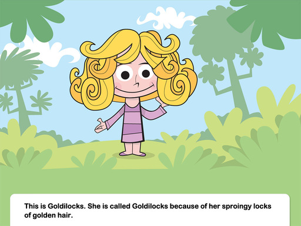
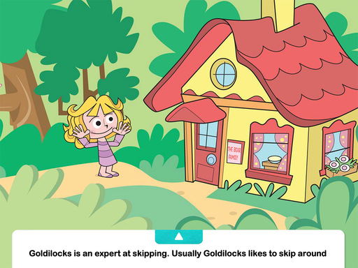
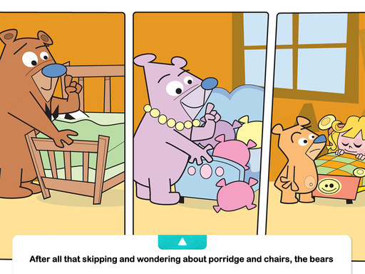

Goldilocks and the Three Bears

This is Goldilocks. She is called Goldilocks because of her sproingy locks of golden hair.

is
an expert at skipping. Usually Goldilocks likes to skip around the pond, but today she decided to skip through
the forest. Along the path she noticed the cutest, coziest cottage she had ever seen. “I wonder who lives in
such a cute, cozy cottage,” Goldilocks thought. Goldilocks skipped to the cottage for a closer look. She knocked
on the door and was disappointed when no one answered. Then it hit her—the most wonderful smell she had ever
smelled! “Porridge!” Goldilocks said dreamily as her stomach rumbled. “That smell is making me hungry! I don’t
think anyone would mind if I went in for a quick taste.” She opened the door to the cottage. 
all
that skipping, Goldilocks was starving. Goldilocks went to the table, where she found three bowls of porridge.
She tasted the first bowl. “Too sweet!” she said. Then she tasted the middle bowl. “Too cinnamony!” she said.
Finally she tasted the last bowl. It was just right! “Wow! This is delicious porridge!” she said. After all that
skipping and eating, Goldilocks wanted to sit down. Goldilocks looked around the cozy cottage and noticed three
chairs. She sat in the first chair. “Too hard!” she said. Then she sat in the middle chair. “Too cushiony!” she
said. Finally she sat in the last chair. It was just right! “This is the most comfortable chair ever!” she said.
After all that skipping and eating and sitting, Goldilocks was feeling sleepy. She went into the next room and
saw three beds. She flopped onto the first bed. “Too firm!” she said. Then she flopped onto the middle bed. “Too
pillowy!” she said. Finally she flopped onto the last bed. It was just right! “Zzzzzzzzzzzzzzzz!” she said.
Meanwhile, three bears came in the door. “That was a fine skip through the forest,” said the papa bear. “It’s
good to be home,” said the mama bear. “I’m hungry!” said the little bear. The bears went over to the table,
where they noticed something was different about their porridge. “Somebody’s been eating my porridge,” said the
papa bear. “And somebody’s been eating my porridge,” said the mama bear. “Hey, my porridge is almost gone!” said
the little bear. The bears ate what was left of their porridge and then went to sit down. They noticed something
was different about their chairs. “Somebody’s been sitting in my chair,” said the papa bear. “And somebody’s
been sitting in my chair,” said the mama bear. “Hey! My chair looks like a person!” said the little bear. After
all that skipping and wondering about porridge and chairs, the bears were sleepy, and they headed to bed. They
noticed something was different about their beds. “Somebody’s been flopping in my bed,” said the papa bear. “And
somebody’s been flopping in my bed,” said the mama bear. “Hey! There’s a girl in my bed!” said the little bear.
Goldilocks opened one eye, then the other. She saw three bears staring at her. “Hello,” said the little bear.
“We’re the bears that live here.” “You are?” said Goldilocks, wide eyed. “Did you know that you have the best
porridge, chair, and bed in the whole world?” “I think so too!” said the little bear. “You don’t mind that I
tried them?” asked Goldilocks. “No, I don’t mind!” said the little bear. “Let’s play!” The little bear invited
Goldilocks to stay, and they laughed and had pillow fights all morning long.